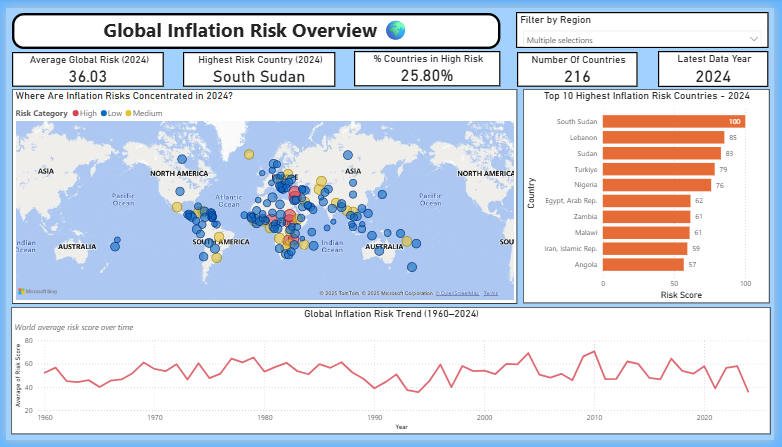
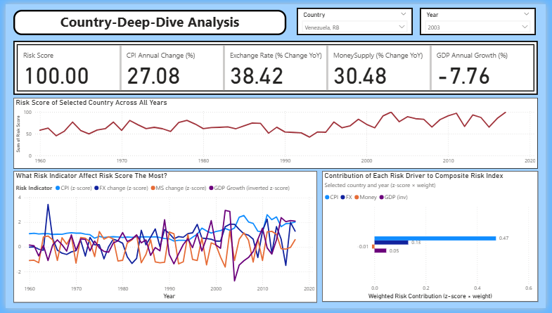
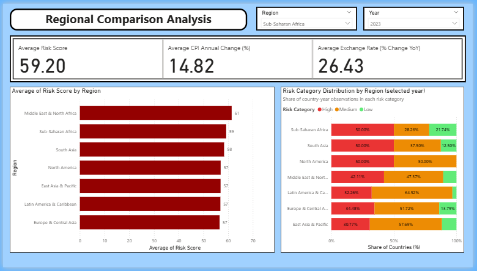
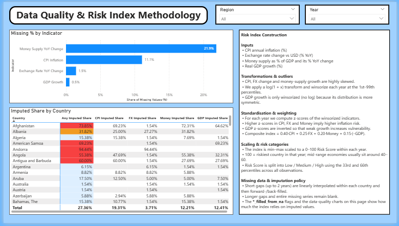

End-to-End Analytics Pipeline & Power BI Dashboard
Inflation dynamics vary significantly across countries, making it challenging to assess and compare macroeconomic risk consistently.
This project builds an end-to-end analytical workflow to quantify inflation risk using macroeconomic indicators from the World Bank dataset.
A composite Inflation Risk Index is engineered to standardize and compare country-level risk across multiple economic dimensions.

Global view of inflation risk distribution across countries.

Detailed country-level analysis of macroeconomic indicators and risk trends.

Comparison of inflation risk patterns across global regions.

Explanation of data quality handling, feature engineering, and risk index construction.